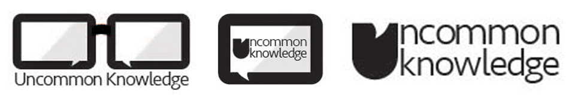
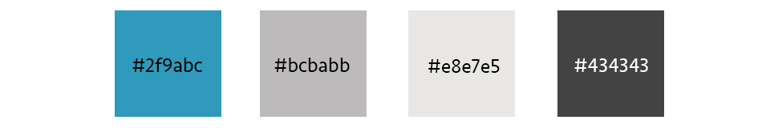
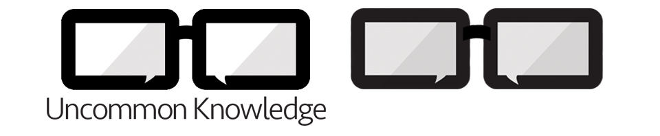
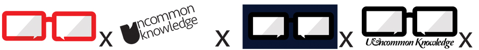
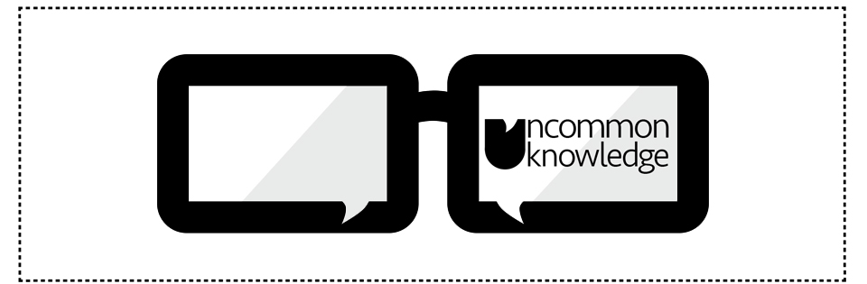
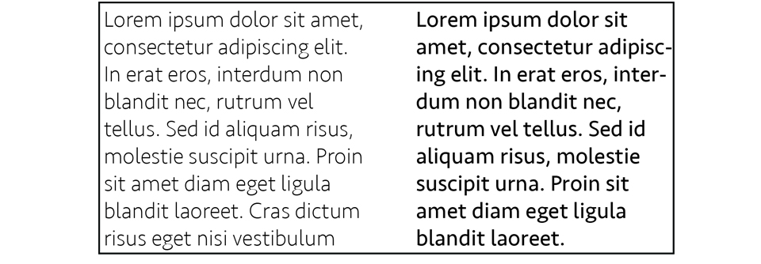

Concept
The speech bubble is a sign thats internationally known and provides immediate recognition to the brand and what it does. As the core values of Uncommon Knowledge are to pass on great wisdom to a younger generation, the logo reflects these values with a youthful and unique take on the classic speech bubble, also incorporating characteristics from the man behind the company, Chris Murphy.
The logo captures key characteristics from Chris' identity enabling people to recognise his influence in the logo. This simplistic logo is both effective and memorable. Its a unique design in the world of public speaking. Using the elements of the brand, from publishing to public speaking, this logo brings the brand together.
Variations
These are three variations of the Uncommon Knowledge logo. The first logo is the primary logo and can be used as a letterhead, banners or on various stationary.The second logo was created to work on smaller touchpoints such as apps, mobile website and could be produced as stickers.This wordmark can be used as a stamp or on the spine of a book.
Colour Palette
This is the colour scheme used for the logo, website and any touchpoints. This colour scheme has to be accuratly reproducted, using the hex. This makes the company image consistent. CMYK / RGB must be matched as closely as possible depending on the materials and print process.
Correct/ incorrect Uses
These are some examples of correct uses for the logo and wordmark.
These are some examples of incorrect uses for the logo. Here are some of the 'rules'; Colour should not be changed, Logo should not be used at an angle, do not put the logo on s background that renders it unrecognisable and do not use different font for wordmark.
Spacing
Maintain a safety of 150% of the square around the logo.
Fonts
The font which is primarily used is Seravek. Simplistic, elegant and easy to read.
Tone of voice
The main goal of this company is to engage and influence people with knowledge of design from an industry professional. This brand is youthful, knowledgable and reliable. It reaches out to its target audience and its consistency shows the brand has a high standard of commitment to its core values.